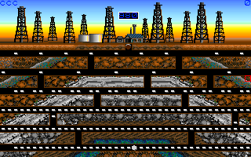

名稱：油龍戲縫 (Oil's Well，英文版)
簡介：Sierra 1983年出品的益智遊戲，1990年移植至DOS，台灣由智冠代理進口。遊戲目標
是將油管延伸到地下抽光石油，但油管會被經過的蟲子咬破，玩家必須適時抽回油管，
或用油管頂端的鑽頭殺死蟲子 [待補]。

備註：本版為1.15
保護：無
檔案：oilswell-114.rar = 1.14版（智冠版）
操作：可執行INSTALL.EXE變更，以下為內定按鍵：
上下左右鍵 = 移動（延伸油管）
Pad-5 = 停止
空白鍵 = 縮回油管
F1 = 暫停
F2 = 音樂開關
F3 = 音效開關
F4 = 改變CGA的顯示顏色
F6 = 卡通畫面開關
F9 = 重新開始
F10/Ctrl-Q = 離開遊戲回到DOS
說明：
一、難易度
1.Regular = 簡單
2.Unleaded = 中等
3.Premium = 困難
二、特殊物品
1.活動油桶（高腳杯形）：分數+1000。
2.硫磺（圓形）：蟲子移動速度變慢。
3.地雷：炸壞鑽頭（對油管無傷）。